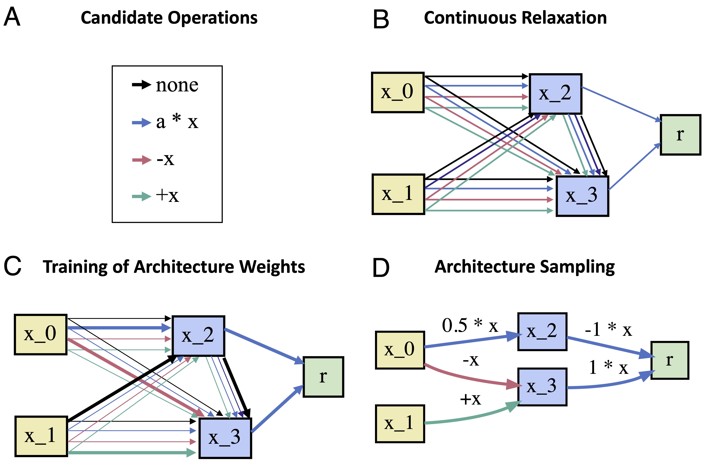

Differentiable Architecture Search
How it works
Regular DARTS treats the architecture of a neural network as a directed acyclic computation graph (DAG), containing \(N\) nodes in sequential order.

Each node \(x_i\) corresponds to a latent representation of the input space. Each directed edge \(e_{i, j}\) is associated with some operation \(o_{i,j}\) that transforms the representation of the preceding node \(i\), and feeds it to node \(j\). Each intermediate node is computed by integrating over its transformed predecessors:
Every output node is computed by linearly combining all intermediate nodes projecting to it. The goal of DARTS is to identify all operations \(o_{i,j}\) of the DAG. Following Liu et al. (2019), we define {\(\mathscr{O} = \{o^1_{i,j}, o^2_{i,j}, \dots, o^M_{i,j}\}\)} to be the set of \(M\) candidate operations associated with edge \(e_{i, j}\) where every operation \(o^m_{i,j}(x_i)\) corresponds to some function applied to \(x_{i}\) (e.g. linear, exponential or logistic). DARTS relaxes the problem of searching over candidate operations by formulating the transformation associated with an edge as a mixture of all possible operations in \(\mathscr{O}\) (cf. Figure A-B):
where each operation is weighted by the softmax transformation of its architectural weight \(\alpha^o_{i,j}\). Every edge \(e_{i, j}\) is assigned a weight vector \(\alpha_{i,j}\) of dimension \(M\), containing the weights of all possible candidate operations for that edge. The set of all architecture weight vectors \(\alpha = \{\alpha_{i,j}\}\) determines the architecture of the model. Thus, searching the architecture amounts to identifying \(\alpha\). The key contribution of DARTS is that searching \(\alpha\) becomes amenable to gradient descent after relaxing the search space to become continuous. However, minimizing the loss function of the model \(\mathscr{L}(w,\alpha)\) requires finding both \(\alpha^*\) and \(w^*\)---the parameters of the computation graph.\footnote{This includes the parameters of each candidate operation \(o^m_{i,j}\).} Liu et al. (2019) propose to learn \(\alpha\) and \(w\) simultaneously using bi-level optimization:
That is, one can obtain \(\alpha^*\) through gradient descent, by iterating through the following steps:
- Obtain the optimal set of weights \(w^*\) for the current architecture \(\alpha\) by minimizing the training loss \(\mathscr{L}_{\textrm{train}}(w, \alpha)\).
- Update the architecture \(\alpha\) (cf. Figure C) by following the gradient of the validation loss \(\nabla \mathscr{L}_{\textrm{val}}\left(w^*,\alpha\right)\).
Once \(\alpha^*\) is found, one can obtain the final architecture by replacing \(\bar{o}_{i,j}\) with the operation that has the highest architectural weight, i.e. \(o_{i,j}\leftarrow \textrm{argmax}_o \alpha^{*o}_{i,j}\) (Figure D).
References
Liu, H., Simonyan, K., & Yang, Y. (2018). Darts: Differentiable architecture search. In International Conference on Learning Representations. arXiv: https://arxiv.org/abs/1806.09055